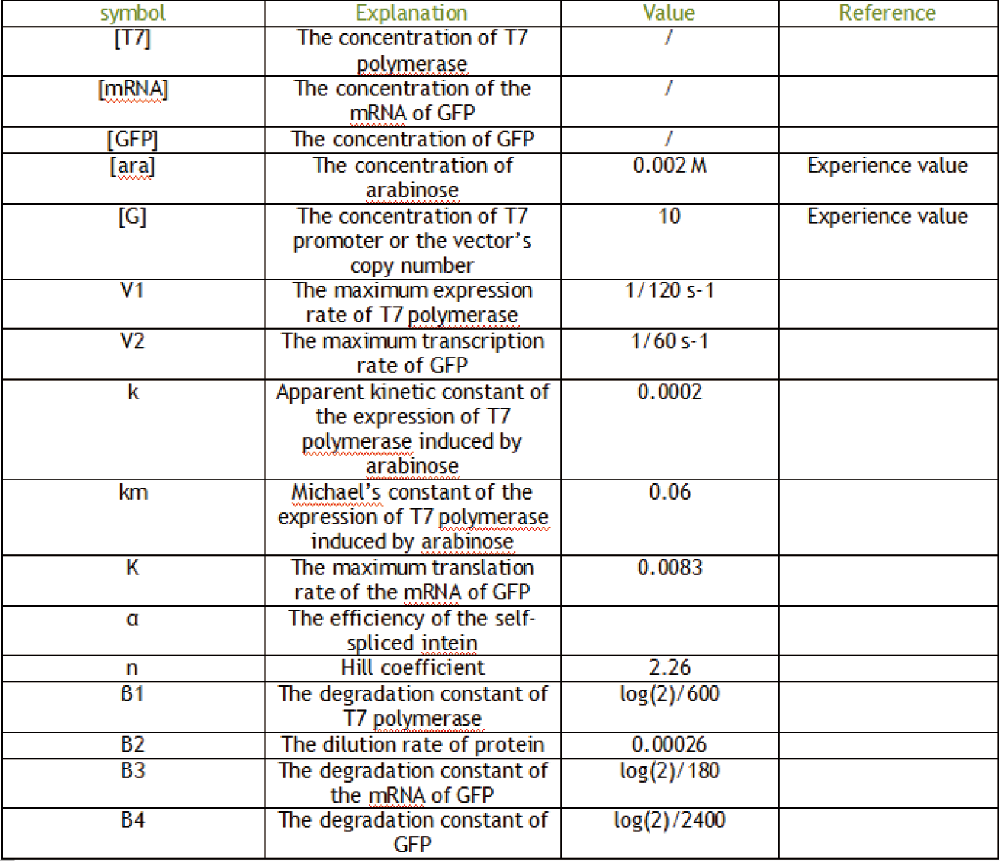

Overview
According to our wet lab project, we separated the modeling part into three modules, T7 regulator, hiweffferritin and heating, to support our wet lab work better. We created sub-pages for each of them that detail all the steps in our analysis. What’s more, we hoped our work not only can benefit our own project but can recreate more inspirable ideas as well.
SubHeading
dfwef
Hello world
fdwfewf
T7 regulator
We constructed a vector, which contained arabinose promoter, T7 polymerase, intein, T7 promoter and GFP, as a platform to control the expression of T7 polymerase which, we all know, was too strong to make it transcribe slower or even stop it. (If you want to learn more details about the regulator, you can click here.超链接到project-regulator页面)Thus, we used a traditional methods, ODEs, to describe the whole circuit. Through calculating, we knew about the relation between the induced amount of arabinose and the expression level of final reporter, GFP, which was transcribed by T7 polymerase. In this module, we have, ODEs, sensitivity analysis and noise analysis, three sections (to make our story completed).
Overview
According to our wet lab project, we separated the modeling part into three modules, T7 regulator, hiweffferritin and heating, to support our wet lab work better. We created sub-pages for each of them that detail all the steps in our analysis. What’s more, we hoped our work not only can benefit our own project but can recreate more inspirable ideas as well.
SubHeading
dfwef
T7 regulator
We constructed a vector, which contained arabinose promoter, T7 polymerase, intein, T7 promoter and GFP, as a platform to control the expression of T7 polymerase which, we all know, was too strong to make it transcribe slower or even stop it. (If you want to learn more details about the regulator, you can click here.超链接到project-regulator页面)Thus, we used a traditional methods, ODEs, to describe the whole circuit. Through calculating, we knew about the relation between the induced amount of arabinose and the expression level of final reporter, GFP, which was transcribed by T7 polymerase. In this module, we have, ODEs, sensitivity analysis and noise analysis, three sections (to make our story completed).